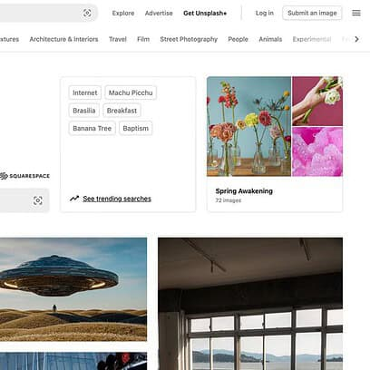
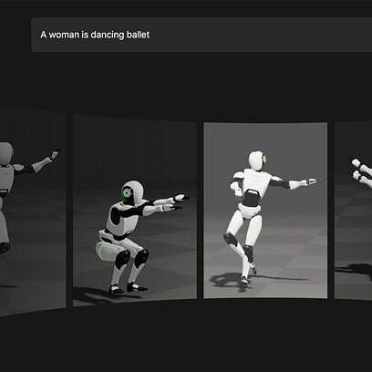

The Death of Google Search: Is the Search Engine on Its
Last Legs?
In the world of digital marketing
and web development,
few institutions have been as influential as Google Search. For years, it’s been the
go-to resource for navigating the web, driving traffic, and serving as a benchmark
for any online content.
-
 Why Does Unsplash Need Two Search Bars? Let’s Talk About ItHave you ever visited Unsplash, that go-to treasure trove of beautiful, free stock images, and wondered why on Earth they’ve decided to clutter their homepage with two search bars? -
 Exciting New Tools for Designers, March 2025Spring into action this season with new tools to boost your workflows, facilitate creative thinking, and help you be a more efficient designer. This roundup is packed with new goodies that can help you with daily tasks and more long-term projects. Enjoy! -
 Blast from the Past: Grumpy Cat: From Viral Fame to Cultural IconGrumpy Cat, famous for her permanent scowl, captured the internet’s heart with her relatable and sarcastic meme captions. Her rise to fame turned her into a beloved cultural symbol of frustration and humor that still resonates today.
Blast from the Past: Grumpy Cat: From Viral Fame to Cultural IconGrumpy Cat, famous for her permanent scowl, captured the internet’s heart with her relatable and sarcastic meme captions. Her rise to fame turned her into a beloved cultural symbol of frustration and humor that still resonates today. -
Digg.com is Back: The Reboot We Didn’t Know We NeededDigg is making a comeback under its original founder, Kevin Rose, and Reddit co-founder Alexis Ohanian, with a renewed focus on AI-driven content curation and community engagement.